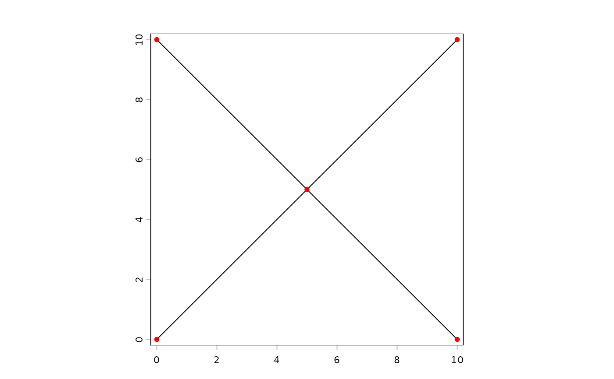

Build a SpatNetwork
netw.Rdnetw creates r a SpatNetwork, in the same spirit as vect for SpatVector or rast for SpatRaster. It dispatches on the class of its first argument:
netw()– an empty network.netw(<SpatVector of lines>, ...)– builds a network by noding the input lines (every place where two lines cross becomes a node, the line pieces between consecutive nodes become edges). The full coordinate sequence between nodes is preserved.netw(<igraph>, ...)– builds a network from anigraphobject. Vertex attributes give the node coordinates; an optionalweightedge attribute supplies edge weights. Edges become straight 2-point lines between their end nodes (igraph carries no edge geometry).netw(<filename>, ...)– reads a network from disk. Currently only the GDAL Geographic Network Model (GNM) format is supported. UsewriteNetworkfor the write side.netw(<SpatNetwork>, ...)– identity (returns the input unchanged).
The same coercions are also exposed via methods::as: as(v, "SpatNetwork"), as(g, "SpatNetwork"), as(net, "igraph").
The accessors net_nodes, net_edges, net_nnodes, net_nedges, net_directed and net_weights return parts of the network as ordinary SpatVectors and primitives. .
Usage
# S4 method for class 'missing'
netw(x, ...)
# S4 method for class 'SpatVector'
netw(x, snap=0, merge=TRUE, directed=FALSE, weights=TRUE, ...)
# S4 method for class 'igraph'
netw(x, x_attr="x", y_attr="y", weight_attr="weight", crs=NULL, ...)
# S4 method for class 'character'
netw(x, ...)
# S4 method for class 'SpatNetwork'
netw(x, ...)
# S4 method for class 'SpatNetwork'
net_nodes(x, ...)
# S4 method for class 'SpatNetwork'
net_edges(x, ...)
# S4 method for class 'SpatNetwork'
net_nnodes(x, ...)
# S4 method for class 'SpatNetwork'
net_nedges(x, ...)
# S4 method for class 'SpatNetwork'
net_directed(x, ...)
# S4 method for class 'SpatNetwork'
net_weights(x, ...)Arguments
- x
the input. For
netw: aSpatVectorof lines, anigraph, a filename pointing to a GNM dataset, an existingSpatNetwork, or missing (for an empty network). For the accessor methods: aSpatNetwork.- snap
numeric. Snapping tolerance, in map units, for
netw,SpatVector-method. If> 0, line endpoints (and other vertices) withinsnapof each other are coalesced before noding. Use this to repair small digitizing gaps in road centerlines. Default0.- merge
logical. If
TRUE(the default), runs of degree-2 shared endpoints are stitched back into single edges, so that only true junctions and dangling endpoints become nodes. SetFALSEto keep every endpoint of every input feature as a node (useful when the input has been pre-segmented and you want to preserve those breaks).- directed
logical. If
TRUE, the network is directed and the orientation of each edge (from_node\(\to\)to_node) is the legal travel direction. Use this for water flow or one-way streets. DefaultFALSE.- weights
One of:
TRUE(the default) to weight each edge by its geometric length (in meters when the CRS is lon/lat, otherwise in CRS units scaled to meters when the unit is known);FALSEfor an unweighted network; a numeric vector of lengthnedgesfor custom edge weights; or a single character string giving the name of a numeric column ofx– in which case each output edge gets the column value of its source feature (with edges that could not be attributed falling back to their geometric length, with a warning).- x_attr, y_attr
For
netw,igraph-method: names of the vertex attributes giving node coordinates. Defaults match whatas(net, "igraph")writes.- weight_attr
For
netw,igraph-method: name of the edge attribute to use as weights. Defaults to"weight"(the igraph convention).- crs
character. For
netw,igraph-method: optional CRS to assign to theSpatNetwork. IfNULL, thecrsgraph attribute is used when present.- ...
additional arguments (currently ignored).
Details
The construction from a SpatVector uses GEOS to "node" the input: all input lines are merged and split at every interior crossing, and exactly-coincident pieces are dissolved. With merge=TRUE, runs of edges connected through degree-2 nodes are then re-fused into a single edge – so a long road that was digitized as many short segments shows up as one edge per stretch between real junctions.
Per-edge attribute forwarding: each output edge is associated with the first input feature whose geometry covers the edge midpoint (within snap, or a small fraction of the bounding box if snap == 0). The 1-based row index of that input feature is stored as the source_id column on net_edges(), and the corresponding row of the input data.frame is copied into the edge attribute table. When merge=TRUE, an edge can span multiple source features that happened to be collinear and connected; only one source's attributes are forwarded in that case.
net_nodes() returns a SpatVector of points, one per node, with a degree column (number of incident edges). For directed networks, in_degree and out_degree columns are added.
net_edges() returns a SpatVector of lines, one per edge, with columns from_node, to_node, source_id, length (cached geometric length, in meters for lon/lat) and – when the network is weighted – a weight column. Any forwarded source attributes follow.
net_weights(net) returns the per-edge weights (or NULL for unweighted networks). net_weights(net) <- v replaces the weights with a numeric vector of length net_nedges(net); setting it to NULL marks the network as unweighted.
For the igraph entry point: forward (SpatNetwork -> igraph) preserves topology, directedness, edge weights, node coordinates (as vertex attributes x and y), additional edge columns from net_edges(), and the CRS (WKT2, on the graph attribute crs). Reverse (igraph -> SpatNetwork) is intentionally lossy: each output edge becomes a straight 2-point line between its end nodes since igraph carries no edge geometry. The igraph package is a Suggested dependency of terra; install it before calling these methods.
Value
A SpatNetwork for netw; a SpatVector for net_nodes/net_edges; an integer for net_nnodes/net_nedges; logical for net_directed; numeric (or NULL) for net_weights.
Examples
# Two crossing roads
a <- vect("LINESTRING(0 0, 10 10)", crs="local")
b <- vect("LINESTRING(0 10, 10 0)", crs="local")
roads <- rbind(a, b)
roads$name <- c("A", "B")
net <- netw(roads)
net
#> class : SpatNetwork
#> type : undirected, weighted
#> dimensions : 5, 4 (nodes, edges)
#> extent : 0, 10, 0, 10 (xmin, xmax, ymin, ymax)
#> coord. ref. : Cartesian (Meter)
#> names : name
#> type : <chr>
net_nnodes(net) # 5: 4 ends + 1 crossing
#> [1] 5
net_nedges(net) # 4: each road is split in two
#> [1] 4
net_weights(net) # length-based, all sqrt(50)
#> [1] 7.071068 7.071068 7.071068 7.071068
# Directed network (e.g. a stream network: from_node -> to_node is downstream)
streams <- netw(roads, directed=TRUE)
net_directed(streams)
#> [1] TRUE
net_nodes(streams) # in_degree, out_degree columns appear
#> class : SpatVector
#> geometry : points
#> dimensions : 5, 3 (geometries, attributes)
#> extent : 0, 10, 0, 10 (xmin, xmax, ymin, ymax)
#> coord. ref. : Cartesian (Meter)
#> names : degree in_degree out_degree
#> type : <int> <int> <int>
#> values : 1 0 1
#> 4 2 2
#> 1 0 1
#> ...
# Custom weights
net_weights(net) <- net_weights(net) * 1.5
# Coercion via setAs
net2 <- as(roads, "SpatNetwork")
if (FALSE) { # \dontrun{
# igraph round-trip (requires igraph)
g <- as(net, "igraph")
back <- netw(g) # or as(g, "SpatNetwork")
} # }
# Plot
plot(net)
